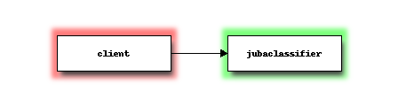
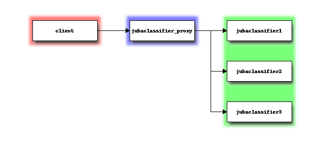
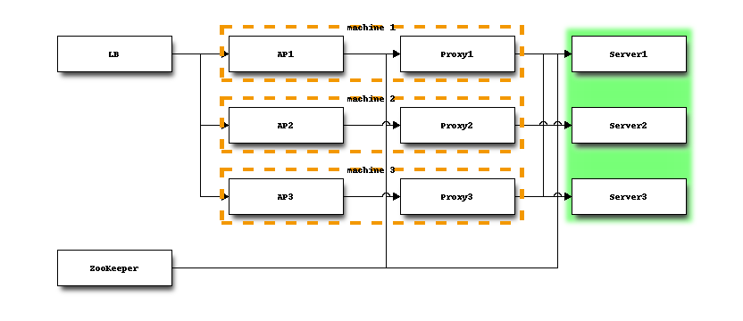

アーキテクチャ概要¶
本項では、Jubatusの構成に関する以下の3点について説明します。
・ システム構成
・ 学習モデルの共有
・ 計算モデル
システム構成¶
Jubatusには3種類のノードが存在します。分析を行うJubatusサーバ、Jubatusサーバに学習データを渡し、結果を受け取るクライアント、そして分散環境において仲介する管理ノード（Proxy）の3種類となります。
Jubatus サーバはモデル情報を格納し、クライアントから受け取ったデータを用いて分析を行います。 自分が保有しているモデル情報を他のJubatusサーバと共有するために、定期的にmix操作を呼出、自分のモデル情報を交換します。
クライアントは、実際にデータをJubatus サーバに与え、処理結果を受け取るノードです。 分散環境では、クライアントは管理ノードに問い合わせを行うことで、分散されたJubatusサーバを意識せずに処理を行うことができます。
ここでは、classifierを例に解説します。 他のタスクの場合は、classifierをrecommender, regressionのように読み替えてください。
パターン1
Jubatusの最も基本的なシステム構成は、以下の図に示すような単一のJubatusクライアントと単一のJubatusサーバ(jubaclassifier)の組み合わせとなります。

パターン2
JubatusではJubatus サーバ側の処理をスケールアウトさせるため、以下の図のように複数のJubatus サーバを使用した分散環境とし、分散処理を行うことができます。 複数Jubatus サーバ間のプロセスは、ZooKeeperを用いて協調動作します。 クライアントは、jubaclassifier_proxyと呼ばれるプロセスにアクセスしますが、jubaclassifier_proxyはjubaclassifierと同じインターフェイスを持つように設計されています。そのため、クライアントは後ろで分散しているかどうかを気にする必要がありません。

パターン3
Jubatusでは、データ量が膨大である、データソースが離れているなどの理由でクライアントを分散させることも可能です。 この場合は、以下の図のように複数のクライアントに対してそれぞれjubaclassifier_proxyを実行してください。

パターン2でクライアント側がボトルネックになっていたり、分散している場合にパターン3を使う、と考えてください。
推奨するプロセス配置構成について
Jubatusを高い信頼性のもとで提供するためには、分散環境で動作させる必要があります。また高いパフォーマンスを維持するためには、JubatusおよびJubatusに関連するプロセス配置構成に気をつける必要があります。 以下の図に、推奨するプロセス配置構成を示します。

- Jubatus Proxy
jubaXXX_proxyという名前の実行ファイルの総称をJubatus Proxyと表記します。 運用の容易さ、アプリケーションの実装の容易さから、クライアントアプリケーションと1:1の構成とし、クライアントアプリケーションと同一のサーバで動作させることを推奨します。 クライアントアプリケーションからJubatus Proxyへ通信できない場合（プロセスがダウンしているなど）に対して、再度プロセスを起動し直すなどの制御が必要になるためです。
- Jubatus Server
jubaXXXという名前の実行ファイルをJubatus Serverと表記します。 --name で同じ名前を指定することで、複数のサーバプロセスが協調動作します。Jubatusは、サーバプロセスが1つでも動作している限り、利用可能です。
上の図では、マシンのN 台に障害が発生した場合でも、すべてのインスタンスが利用可能なよう、N+1台のマシンに分散してプロセスを配置しています。
Jubatusはすべてのデータをメモリ上で処理するという特徴があります。マシンのリソース(特にメモリ)が不足しないよう、サーバプロセスの配置には注意する必要があります。
- ZooKeeper
Jubatusを分散環境で動作させる際、必ずZooKeeperが利用できる必要があります。ZooKeeperを高い信頼性で動作させるために、以下のことを注意します。詳細はZooKeeperのドキュメントを参照して下さい。
- 奇数台のマシンによるクラスタ構成(アンサンブル)で運用します。
- ZooKeeperのパフォーマンスが低下し、Jubatusの動作が不安定になることを避けるため、ZooKeeper専用のマシンを用意することを推奨します。
学習モデルの共有¶
Jubatusはモデル情報を緩やかに共有し、同一時刻において同じモデルが全サーバノードで共有されていることが保証されていない、という割り切りをしています。
一般にリアルタイム、大規模分散、深い分析の3つの特徴はトレードオフの関係にあり、全てを同時に満足させることは困難です。 例えばMapReduceなどの基盤はバッチ処理に特化しており、クエリーの結果を瞬時に得ると言ったことは苦手です。またComplexEventProcessingなどにおいては複数のノードの情報を共有することは困難です。
Jubatusはオンライン機械学習やオンラインアルゴリズムの積極的な活用、および緩やかなモデル情報の共有によりこれらの問題を解決しています。
計算モデル¶
Jubatusでは、Update、Analyze、Mixと呼ばれる3つの種類の操作を定義することで、分散環境においてもさまざまなデータ分析を行えることを実現しています。 これは、MapReduceがMapとReduceの2つの操作を定義することで分散処理を実現することと同様です。
- ・ Update
- Updateでは、データと現在のモデルが与えられた時、更新したモデル結果を返す操作です。この操作は各ローカルノード（各サーバノード）内において排他的に行う必要があります。
- ・ Analyze
- Analyzeでは、現在のモデルに基づいて与えられたデータを分析し、分析結果を返す操作です。この操作はモデルを更新せず読み込み処理だけで実現でき、並列化することが可能です。
- ・ Mix
- Mixは2つのモデルが与えられた時、それらを混ぜたモデルを返す操作です。多くの分類の学習問題など、凸最適化問題に帰着する問題においては、Mix操作は単純な平均操作で高速に収束することが知られています。
Update、Analyzeの2つの操作はユーザがクライアントノードから呼び出す操作であるのに対し、Mixはユーザから呼び出すことは無く、分析モデルにしたがってシステム側が裏で自動的に呼び出すようになっています。